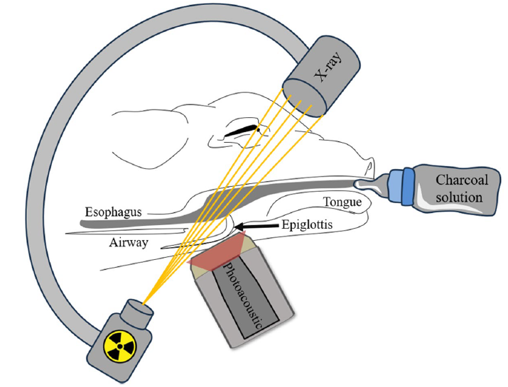
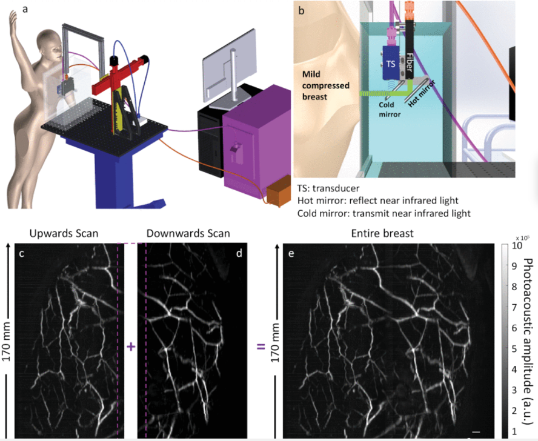
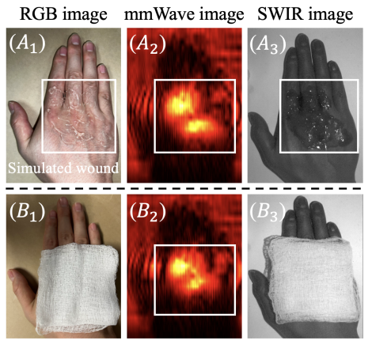

Yanda Cheng, Chuqin Huang, Robert W. Bing, Emily Zheng, Huijuan Zhang, Wenyao Xu, Christopher Mayerl, Rebecca German, Catriona M. Steele, Jonathan Lovell, Lin Zhang, Jun Xia
Med-X, 2025

Huijuan Zhang, Emily Zheng, Wenhan Zheng, Chuqin Huang, Yunqi Xi, Yanda Cheng, Shuliang Yu, Saptarshi Chakraborty, Ermelinda Bonaccio, Kazuaki Takabe, et al.
IEEE Transactions on Medical Imaging, 2025

Zhang, Xiaoyu and Li, Zhengxiong and Yanda Cheng and Xu, Chenhan and Huang, Chuqin and Zhang, Emma and Zhan, Ye and Bo, Wei and Xia, Jun and Xu, Wenyao, et al.
IEEE Internet of Things Journal, 2025